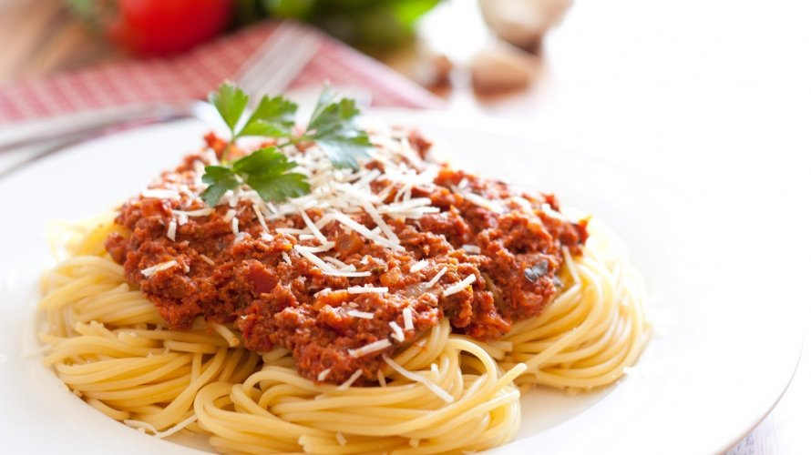

Cocinemos juntos
At vero eos et accusamus et iusto odio dignissimos ducimus qui blanditiis praesentium voluptatum deleniti atque corrupti quos dolores et quas molestias excepturi sint occaecati cupiditate non provident, similique sunt in culpa qui officia deserunt mollitia animi, id est laborum et dolorum fuga.
Nuestros artículos destacados...
Tacos Mexicanos:

Hoy les enseño cómo hacer tacos mexicanos, un clásico de la gastronomía mundial! Haciendo un repaso de las recetas que fui subiendo al blog me di cuenta que no tenía receta de tacos y no no no señores, solo tengo una receta de masa para tacos pero nunca expliqué completamente cómo hacer tacos mexicanos de principio a fin! Esto no puede ser de esta manera y además de pedirles perdón aquí estoy, dispuesta a saldar esta deuda imperdonable.

233 Me Gusta
Tallarines a la Bolognesa:
En casa, un plato de pasta (sobre todo los tallarines o tagliatelle caseros con salsa bolognesa) era el clásico de los largos almuerzos de los domingos. No había ritual más tradicional que ese. Nuestra costumbre era comer pasta por horas y sin ningún apuro. Un domingo eran los tallarines con bolognesa. Otro domingo, con salsa de tomate y costillitas de cerdo o colita de cuadril mechada con ajo, perejil y hasta panceta (o tocino). Otros domingos eran ravioles caseros rellenos de seso. Y otros, tal vez ñoquis de papa. Sea cual fuere el plato de pasta, la salsa siempre se comenzaba a hacer el día anterior, sobre todo si llevaba muchos ingredientes. Y la masa de la pasta se comenzaba a hacer tempranito el domingo para que tuviera tiempo de dejarla descansar, de estirarla y cortarla—sí, todo a mano. Un plato de pasta con salsa casera recién hecha no tiene precio. Uno de los mejores recuerdos, además de los sabores y aromas inolvidables, es que mi mamá siempre compartía todo… una vez que la pasta y la salsa estaban hechas, preparaba una cacerola para compartir con el vecino.
125 Me Gusta
Entrevista Vida Saludable:
At vero eos et accusamus et iusto odio dignissimos ducimus qui blanditiis praesentium voluptatum deleniti atque corrupti quos dolores et quas molestias excepturi sint occaecati cupiditate non provident, similique sunt in culpa qui officia deserunt mollitia animi, id est laborum et dolorum fuga.
152 Me Gusta
Tabla de alimentos recomendados:
At vero eos et accusamus et iusto odio dignissimos ducimus qui blanditiis praesentium voluptatum deleniti atque corrupti quos dolores et quas molestias excepturi sint occaecati cupiditate non provident, similique sunt in culpa qui officia deserunt mollitia animi, id est laborum et dolorum fuga.
| Alimento | Calorías | Vitaminas | Sodio | Recetas |
|---|---|---|---|---|
| Berenjena | 65 | A, B1 | 10 |

|
| Naranja | 20 | A, B1 | 45 |
|
| Pan Integral | 34 | A | 65 |
|
| Café | 56 | A, B2 | 87 |
|
| Leche | 20 | B1 | 23 |
|